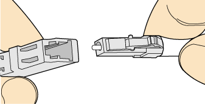
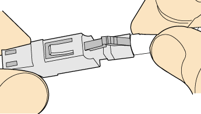
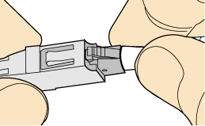
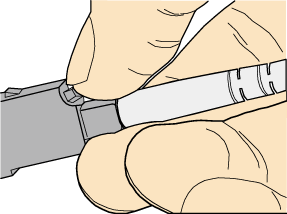

Installing an LC Fiber Connector
Procedure
- Remove the dustproof cap of the LC fiber connector and store it for future use.
- Align the core pin of the male connector with that of the female connector, as shown in Figure Aligning the male connector with the female connector.
Figure 1 Aligning the male connector with the female connector
- Align the male connector with the fiber adapter and gently push the male connector until it is completely seated in the fiber connector, as shown in Figure Feeding the male connector into the female connector.
Figure 2 Feeding the male connector into the female connector
- A clicking sound indicates that the male connector is locked, as shown in Figure Installed LC connector.
Figure 3 Installed LC connector
- To disassemble an LC fiber connector, press the locking nut to release the locking clips from the bore, and gently pull the male connector, as shown in Figure Disassembling an LC fiber connector.
Figure 4 Disassembling an LC fiber connector